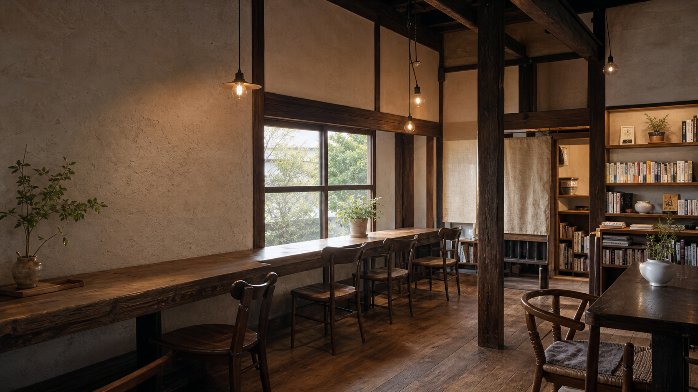
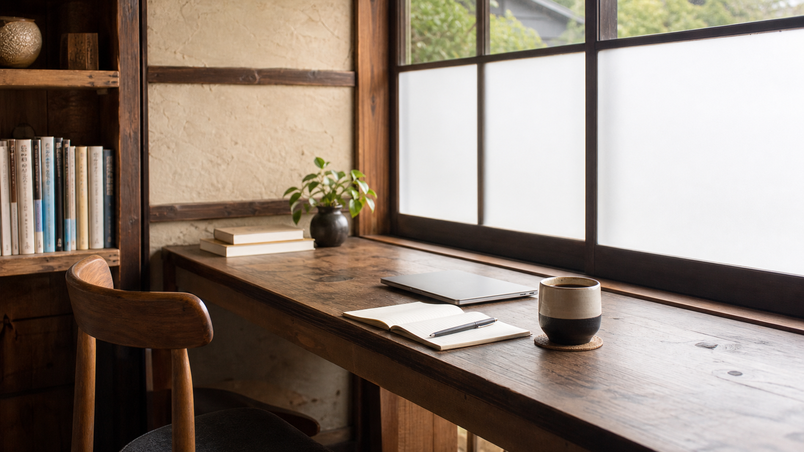
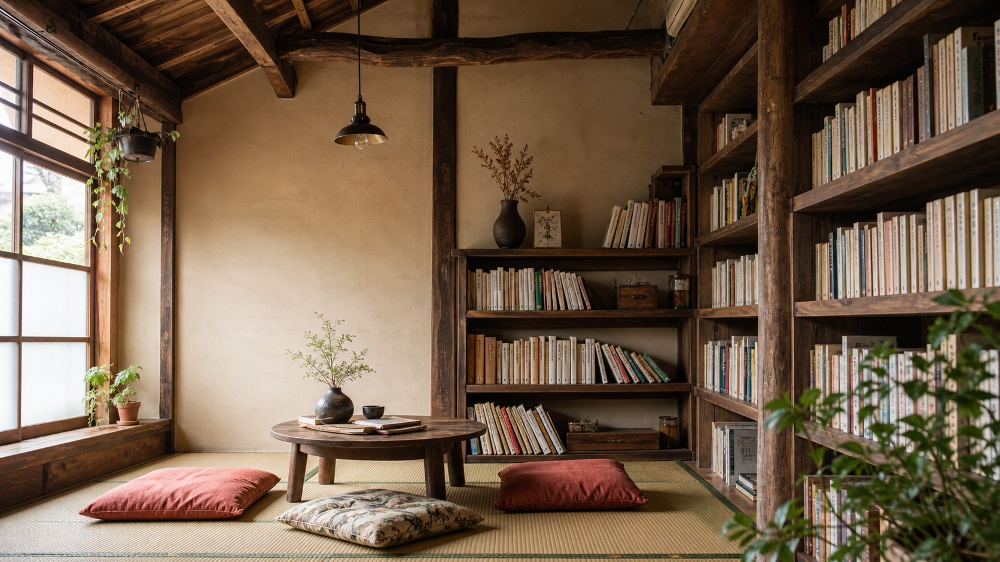
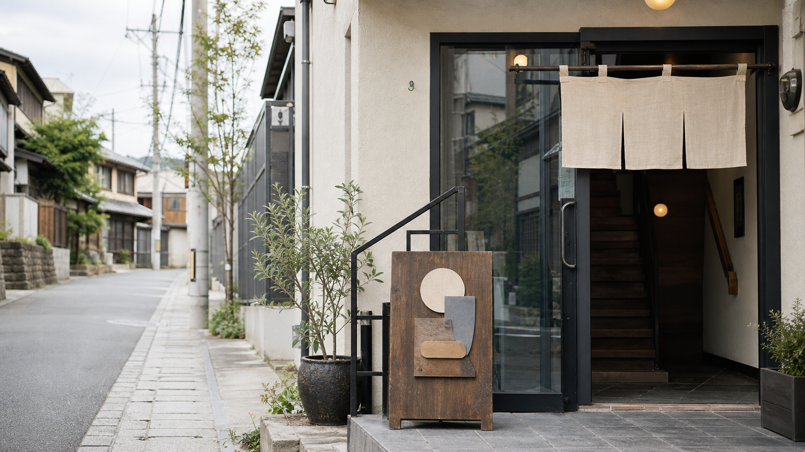

本と喫茶を楽しめる静かな空間
本に囲まれながら、飲み物とともにゆっくり過ごせる喫茶空間です。 観光の合間の休憩にも、一人での読書時間にも向いています。

Kamakura book cafe
由比ガ浜通りの2階にある、静かに読書や休憩を楽しめる隠れ家のような喫茶空間です。
Quiet time in Yuigahama
観光の合間に足を休めたい方、本を読みながら過ごしたい方、落ち着いた場所で作業したい方へ。 木のぬくもりと本に囲まれた空間で、急がない時間を過ごせることを丁寧に伝えるデモページです。
Reasons
本に囲まれながら、飲み物とともにゆっくり過ごせる喫茶空間です。 観光の合間の休憩にも、一人での読書時間にも向いています。
鎌倉・由比ガ浜エリアの2階にある、知る人ぞ知る雰囲気の店舗です。 にぎやかな街歩きの途中で、少し気持ちを整えたい時に立ち寄りやすい場所です。
古民家の趣を感じる内装や、木のぬくもりのある空間が印象的です。 写真に残したくなる雰囲気と、長く滞在したくなる居心地の良さを伝えます。
For first visitors
店舗は2階にあります。カフェ営業は日曜・月曜の13:00〜18:00、 レンタルスペースは火曜〜土曜が目安です。 HPでは入口の目印、最新営業情報、利用方法を分かりやすくまとめることで、初来店のハードルを下げます。
入口が分かりにくい場合に備え、外観写真と道順を掲載します。
来店前にInstagramのカレンダーで最新の営業日・営業形態を確認できる導線を置きます。
静かに過ごしたい方へ、店内の雰囲気や利用シーンを先に伝えます。
Atmosphere
窓辺での読書や作業、畳で過ごすひと休み。 初めて訪れる方も、落ち着いて過ごせる空間。



Shop information
Next visit
カフェ営業は日曜・月曜 13:00〜18:00が目安です。 来店前にInstagramのカレンダーで最新情報をご確認ください。